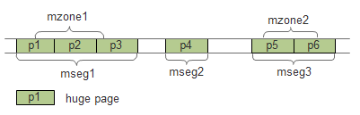

Memory¶
DPDK使用hugetlbfs内核文件系统支持大页的分配。连续的内存段抽象为rte_memseg，如果把rte_memseg中的一部分命名并以供使用，那么称为rte_memzone。三者的关系如下图所示。
本章只对DPDK内存机制做一个概述，并介绍EAL初始化时内存的初始化过程，各种内存机制的详细介绍见其他章节，如下表所示：
| 内存机制 | 章节 |
|---|---|
| memseg | Memseg |
| memzone | Memzone |
| malloc | Malloc |
| mempool | Mempool |
| mbuf | Mbuf |
内存的初始化¶
大页信息初始化¶
eal_hugepage_info_init(librte_eal/linuxapp/eal/eal_hugepage_info.c):
大页信息结构为：
struct hugepage_info {
uint64_t hugepage_sz; /**< size of a huge page */
const char *hugedir; /**< dir where hugetlbfs is mounted */
uint32_t num_pages[RTE_MAX_NUMA_NODES];
/**< number of hugepages of that size on each socket */
int lock_descriptor; /**< file descriptor for hugepage dir */
};
- 读取
/sys/kernel/mm/hugepages中的“hugepages-XXX”目录，最多读取 3个。比如读取到hugepages-2048kB，将其中的2048kB转换为2048*1024，存入internal_config.hugepage_info[num_sizes].hugepage_sz， num_sizes<3 - 打开
/proc/meminfo文件，读取Hugepagesize项的值，做为大页默认大小。打开/proc/mounts文件，找到类似hugetlbfs /dev/hugepages hugetlbfs rw,seclabel,relatime 0 0或nodev /mnt/huge hugetlbfs rw,relatime 0 0的行，根据选项(rw,relatime)中出现的pagesize=项的值(如果有的话)，来返回对应的大页文件系统挂载路径，如/dev/hugepages或/mnt/huge，将其存入internal_config.hugepage_info[num_sizes].hugedir - 锁定hugedir(flock)
- 打开
sys/kernel/mm/hugepages/hugepages-XXX目录下面的resv_hugepages和free_hugepages文件，计算可用大页数量， 存入internal_config.hugepange_info->num_pages[0]，这个0是socket id，在支持NUMA的系统中先在socket 0上进行操作 - internal_config.num_hugepage_sizes数设置为num_sizes数，不大于3
- 将上述过程发现的所有num_sizes个大页信息按从大到小排序，并检查至少有一个可用大页尺寸
大页内存初始化¶
rte_eal_memory_init (librte_eal/common/eal_common_memory.c)
const int retval = rte_eal_process_type() == RTE_PROC_PRIMARY ?
rte_eal_hugepage_init() :
rte_eal_hugepage_attach();
这里对根据是主进程还是子进程，分别进行了处理。后续讲到多进程模式时还要说到这个问题。
rte_eal_hugepage_init(librte_eal/linuxapp/eal/eal_memory.c)
检查
/proc/self/pagemap是否可读计算各种页尺寸总共需要的页总数，并分配一个页表，每一页占一项
for (i = 0; i < (int) internal_config.num_hugepage_sizes; i++) { used_hp[i].hugepage_sz = internal_config.hugepage_info[i].hugepage_sz; nr_hugepages += internal_config.hugepage_info[i].num_pages[0]; } tmp_hp = malloc(nr_hugepages * sizeof(struct hugepage_file));
映射所有大页
map_all_hugepages(&tmp_hp[hp_offset], hpi, 1);
在hugetlbfs挂载的路径，如
/mnt/huge下面创建num_pages个文件，文件名默认为rtemap_XXX，XXX是数字。之后以页大小将这些文件映射：fd = open(hugepg_tbl[i].filepath, O_CREAT | O_RDWR, 0755); virtaddr = mmap(vma_addr, hugepage_sz, PROT_READ | PROT_WRITE, MAP_SHARED, fd, 0);
如果orig为真，则将映射后的虚拟地址virtaddr赋给页表项结构的orig_va。之后给文件加一把共享锁(LOCK_SH)。
对所有页尺寸，取得上一步映射得到的虚拟地址的物理地址
find_physaddrs(&tmp_hp[hp_offset], hpi);
在此函数中，调用rte_mem_virt2phy(librte_eal/linuxapp/eal/eal_memory.c)将虚拟地址转为物理地址:
for (i = 0; i < hpi->num_pages[0]; i++) { addr = rte_mem_virt2phy(hugepg_tbl[i].orig_va); hugepg_tbl[i].physaddr = addr; }
rte_mem_virt2phy：
// Cannot parse /proc/self/pagemap, no need to log errors everywhere if (!proc_pagemap_readable) return RTE_BAD_PHYS_ADDR; // standard page size page_size = getpagesize(); fd = open("/proc/self/pagemap", O_RDONLY); virt_pfn = (unsigned long)virtaddr / page_size; offset = sizeof(uint64_t) * virt_pfn; lseek(fd, offset, SEEK_SET); read(fd, &page, sizeof(uint64_t)); // the pfn (page frame number) are bits 0-54 (see // pagemap.txt in linux Documentation) physaddr = ((page & 0x7fffffffffffffULL) * page_size) + ((unsigned long)virtaddr % page_size); close(fd); return physaddr;
其中，通过
/proc/self/pagemap来从虚拟地址得到物理地址的可以参考 [linux_pagemap] 和 [virt2phy] 。获取每一个大页对应的NUMA socket Id
find_numasocket(&tmp_hp[hp_offset], hpi);
打开
/proc/self/numa_maps文件，解析其中的文本行，遇到类似7fd94fc00000 prefer:0 file=/dev/hugepages/rtemap_119 huge dirty=1 N0=1的行，其中的7fd94fc00000是页的虚拟地址，N0=后面的数字0是该页对应的socket Id。根据物理地址排序页表项
sort_by_physaddr(&tmp_hp[hp_offset], hpi);
在x86上，低地址在前，高地址在后。
把排序后的页重新map一次 (此时orig参数为0)
试图把连续的物理地址块映射到连续的虚拟地址块上。首先求物理地址连续的页的个数，算出需要的虚拟地址区域长度，然后再试图取得相应大小的虚拟地址，如果无法获取，则在mmap时让系统去决定虚拟地址：
else if (vma_len == 0) { unsigned j, num_pages; for (j = i+1; j < hpi->num_pages[0] ; j++) { if (hugepg_tbl[j].physaddr != hugepg_tbl[j-1].physaddr + hugepage_sz) break; } num_pages = j - i; vma_len = num_pages * hugepage_sz; vma_addr = get_virtual_area(&vma_len, hpi->hugepage_sz); if (vma_addr == NULL) vma_len = hugepage_sz; }
重新创建/打开大页文件并映射，把最终的虚拟地址存入final_va成员：
fd = open(hugepg_tbl[i].filepath, O_CREAT | O_RDWR, 0755); virtaddr = mmap(vma_addr, hugepage_sz, PROT_READ | PROT_WRITE, MAP_SHARED, fd, 0); hugepg_tbl[i].final_va = virtaddr;
unmap第一次内存映射
将页表项保存到共享内存
hugepage = create_shared_memory(eal_hugepage_info_path(), nr_hugefiles * sizeof(struct hugepage_file)); copy_hugepages_to_shared_mem(hugepage, nr_hugefiles, tmp_hp, nr_hugefiles);
将大页信息存入memory config结构rte_mem_config
若干个页根据是否连续，是否同一个socket，是否相同页尺寸等，分成最多RTE_MAX_MEMSEG(默认256)个内存段(memory segment)：
if (new_memseg) { j += 1; if (j == RTE_MAX_MEMSEG) break; mcfg->memseg[j].phys_addr = hugepage[i].physaddr; mcfg->memseg[j].addr = hugepage[i].final_va; mcfg->memseg[j].len = hugepage[i].size; mcfg->memseg[j].socket_id = hugepage[i].socket_id; mcfg->memseg[j].hugepage_sz = hugepage[i].size; } // continuation of previous memseg else mcfg->memseg[j].len += mcfg->memseg[j].hugepage_sz; hugepage[i].memseg_id = j;